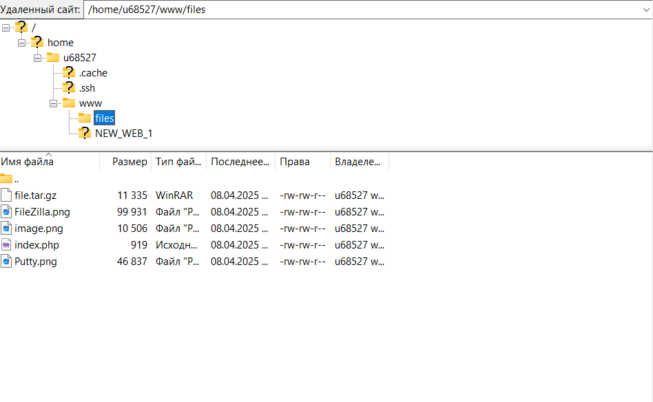
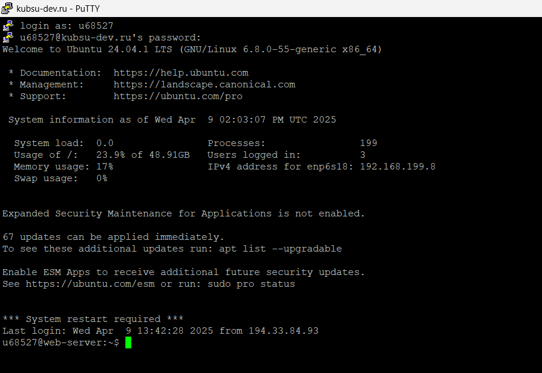
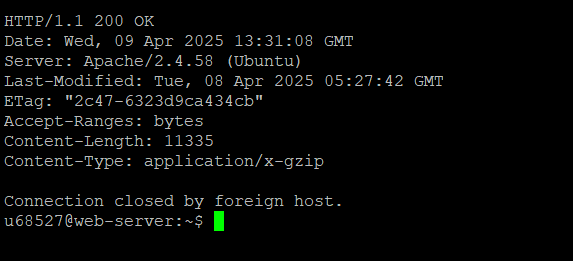
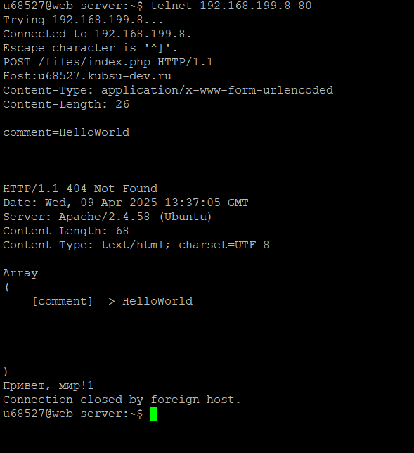
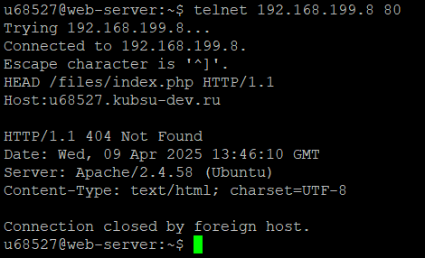

Задание 2
1) Для начала с помощью FileZilla зальем на сервер все файлы из каталога Files

2) С помощью программы Putty подключаемся к учебному серверу.

3) С помощью метода GET получим главную страницу в протоколе HTTP 1.0.

4) С помощью метода GET получим внутреннюю страницу в протоколе HTTP 1.1.

5) С помощью метода HEAD определим размер файла file.tar.gz, не скачивая его. В заголовке Content-Length содержится размер файла в байтах.

6) С помощью метода HEAD определим медиатип ресурса /image.png. В заголовке Content-Type содержится медиатип файла image.

7) С помощью метода POST отправим комментарий на сервер по адресу /index.php.

8) С помощью метода GET получим первые 100 байт файла /file.tar.gz. Для этого используем заголовок запроса Range со значением bytes=0-99 (первые 100 байт по индексации).

9) С помощью метода HEAD определим кодировку ресурса /index.php. В заголовке Content-Type значение charset содержит кодировку ресурса /index.php.
